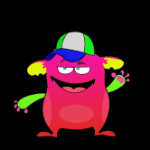
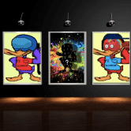
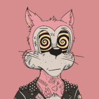

DeFi Degen Land Defi Degen Land 是独特的下一代元界。 游戏化 DeFi 在游戏中收获待定奖励 拥有游戏内物品的所有权 玩奖励（如鱿鱼游戏） 目标是让 DeFi 真棒！ 区块链、加密、NFT、元界、
Defi Empire games Defi Empire 是币安智能链上的一个生态系统，每个人都可以在一个安全、值得信赖的环境中享受最流行和最有利可图的 Defi 项目/游戏，并提供透明的无地毯合约。 我们
DeFi Farmers DeFi Farmers 由居住在 Avalanche 网络上的 9,500 名随机生成的生态友好型 NFT Farmers 组成。每个 DeFi Farmer 都是一个 NFT，代表“Ecoverse”中的一个化身。 通过持有 DeFi Farmer
DeFi Halal 得益于部署在 Polygon 上的 DeFi 清真协议，现在可以无需任何利息即可获得符合清真和伊斯兰教法的贷款。它基于 Liquity 开源的经过实战测试和审计的合约。所有合约代码都
DeFi of Thrones DeFi Of Thrones（DoTx）旨在通过跟踪和收集来自 DeFi 生态系统的价格数据并为用户提供赌博的可能性，成为预测市场平台。每周都会有 2 个 DeFi 代币或硬
DeFi Plaza DeFi Plaza 是一家低成本交易所，为 120 对交易量最大的 DeFi 代币提供一流的兑换成本。 高度集成的设计使所有 120 个交易对的 Gas 成本最低，且交易所费用低至 0.1%。 尽
DeFi Runners DeFi Runners 是一个为加密资产用户提供各种服务的金融项目。 DeFi Runners 的想法是将所有现有的金融工具转移到一个平台中，为交易者和投资者提供复杂的解决方案。该平台
DeFi Warrior DeFi Warrior 是一款 DeFi x NFT Play2earn 区块链游戏，具有引人入胜的加密星系游戏故事。在 NFT 游戏大行其道的同时，DeFi Warrior 凭借游戏中 DeFi 和 NFT 的结合，以及加密世界的缩影故
DeFi Yield Protocol DeFi Yield Protocol (DYP) 是一个独特的平台，它为收益耕种、质押、NFT 提供解决方案，并使用户能够利用 DYP 的高级交易工具。是什么让 DYP 成为独特的单产农业聚合器？ DYP 成
DeFi Zone - ZONE ONE DeFi ZONE Finance 是托管在 FTM 网络上的多区域收益农场。平台的每个区域通过高利息池和农场来复合对立区域代币中代币的效用。 这与质押奖励金库和强大的营销议程相结
DeFi Zone - ZONE TWO DeFi ZONE Finance 是托管在 FTM 网络上的多区域收益农场。平台的每个区域通过高利息池和农场来复合对立区域代币中代币的效用。 这与质押奖励金库和强大的营销议程相结
DeFireX 我们的 DeFi 平台允许来自世界各地的用户使用 DeFi 中的最佳机制通过 Yield Farming 获得透明且可靠的利润。 DeFireX 平台直接与 Venus、Compound、PancakeS
DefiSaver DeFi Saver 是去中心化金融的一站式管理解决方案，具有先进的杠杆管理工具和独特的自动化管理功能。 DeFi Saver 最初于 2019 年 4 月作为 CDP Saver 推出，此后逐渐扩大对其他协议
DefiTemple 最低存款 - 0.01 BNB 每日奖励 - 8% 回顾 这是建造圣殿的核心基础。这是你来扩展你的权力的地方。 Defi Temple 的这一特殊支柱建立在币安智能链之上。一旦你进入，坐下，
DeFiVest DeFiVest 是一种非托管去中心化金融流动性协议，是 dVest 生态系统不可或缺的一部分。 dVest 代币为 dVest 生态系统提供动力，并通过 dVest 交易所收入、流动性挖矿、质押等为代币
DeFizer Defizer.io 是什么？收益聚合器和优化器 Defizer.io 是内置于币安智能链的收益聚合器和优化器。在 defizer.io，用户可以在 DeFi 生态系统中找到最佳机会，提供世界一
DefySwap Finance DefySwap 是一种自动做市商 (AM)，它包括交换/交易、流动性池、收益农业和池并基于 Fantom Opera 链。除了 DEX 的传统功能外，DefySwap 还包括 1000 万代币的固定供
 Degdango Degdango 是第一个在 Harmony 区块链上使用 Tokenomics 的 NFT 项目。 Degdangos是富裕的血统，除了非常可爱和具有令人敬畏的稀有特征可以交易之外，它们还具有特殊的能力
 Degen Ducks 许多鸭子。许多元宇宙。很多商品？ Degen Ducks #NFTs 来到#Solana ❌ #FTM。好玩➕实惠➕稀有！ 2万美元奖金！ Degen Ducks 是一个由 88 只鸭子组成的集团，这些鸭子
Degen Protocol DegenProtocol 是一个社区项目。加入我们！我们是您所有 DEFI 和被动收入的一站式商店。 有几种不同的方法可以在 2021 年增加你的加密货币持有量。你可以购买、交易、质押，
 DEGEN TOONZ COLLECTION 8888 degen TOONZ 作为独家元节社区的成员，拥有从头开始构建它的能力。 GM GN Industries 现已开业！访问下面的链接来领取你的炸药并引爆你的 Toonz！请注意一个淘气的角
DeHero DeHero 是由 MixMarvel 孵化并发布的基于 BSC 的 GameFi 应用。通过质押 NFT 资产，用户可以拆箱 NFT 卡包盲盒，收集 NFT 角色，并通过适当的训练策略进行卡片挖掘。结果，用户获得了 DeHero
Deimos Token Deimos Token 是一个开源平台，利用区块链技术的分布式和去中心化特性，促进币安智能链生态系统中不同资产类别的更多采用。 Deimos 是一种基于现有币安智能链的加密货
delta.theta delta.theta 是一个点对点期权交易平台，目前在币安智能链、Polygon 和以太坊上运行。简而言之，它是一种使 CEX 的期权流动性在链上可用的协议。 delta.theta 使实时订单
Demodyfi 该协议利用 Moonbeam 的平行链智能合约互操作性，而 Substrate 框架作为基础层。结合这一点，它可以在 Polkadot 上构建，进一步使其与 EVM 兼容，并使用以太坊堆栈中可用的工具部署


 是一个市场预测平台 - 它允许您投注您最喜欢的加密项目。")


 生态系统的全新理念。")


 DELTA DAO，用于管理加密资产。")